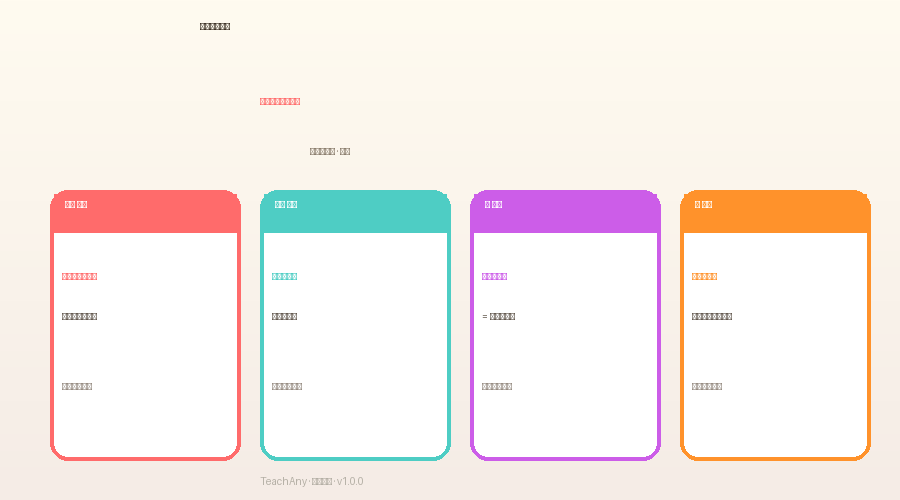
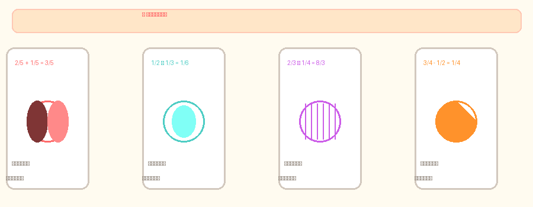
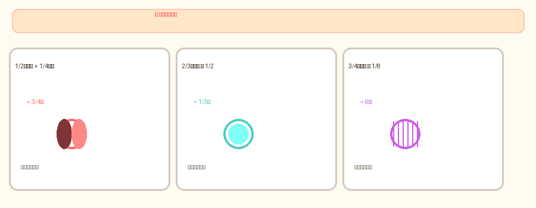

分数加减乘除 · 小学五年级数学
🎂 分蛋糕、调配方、比分数——厨房就是最好的数学教室
🧑🍳 AND：你已经认识了分数，知道 12、
13、
34 是什么意思。
🎯 BUT：但当你要把两个分数加在一起、乘几倍、或比较大小的时候，常常不知道该怎么做——特别是分母不一样的时候！
🔧 THEREFORE：今天你就是小厨师，在厨房里通过分蛋糕、调配方、算比例，掌握分数的加减乘除四则运算！
🎂 同分母分数加减：分母不变，分子相加减。
比如：28 + 38 = 58（把蛋糕分成8份，2份+3份=5份）
57 - 27 = 37（7份里的5份拿走2份=剩3份）

👆 拖动橙色条观察同分母加法：2/8 + 3/8 = 5/8
🧩 分母不同怎么加？先通分——找分母的最小公倍数，变成相同分母！
12 + 13 = 36 + 26 = 56（分母2和3的最小公倍数是6）
👆 拖动滑块选择两个分母，观察通分过程
✖️ 分数乘法口诀：分子乘分子，分母乘分母
23 × 12 = 2×13×2 = 26 = 13
理解：12 的 23 是多少？——把一半分成3份取2份！

➗ 分数除法秘籍：除以一个数 = 乘它的倒数！
12 ÷ 23 = 12 × 32 = 1×32×2 = 34
理解：12 里面有几个 23？——变成乘法来算！
搅拌机就绪！选择一关开始挑战 →
姐姐吃了 58 个披萨，弟弟吃了 38 个，姐姐比弟弟多吃多少？
✅ 5/8 - 3/8 = 2/8 = 1/4
面粉用了 13 袋，糖用了 14 袋，一共用了多少？
✅ 通分：4/12 + 3/12 = 7/12 袋
23 升牛奶倒进每个杯子 16 升，能倒几杯？
✅ 2/3 ÷ 1/6 = 2/3 × 6/1 = 12/3 = 4 杯
→ 分母不变，分子直接加减。记得约分！
易错：不要连分母一起加！3/8+2/8=5/8，不是5/16。
→ 先通分→找到分母的最小公倍数→变成同分母→再加减。
1/2+1/3：分母2和3的最小公倍数是6，通分=3/6+2/6=5/6。
→ 乘法：分子×分子，分母×分母。除法：×倒数！
2/3÷3/4 → 2/3×4/3=8/9，不要当作2/3×3/4！
3/8+2/8=5/8 ✅ 不是5/16 ❌。只有乘法时才会分母乘分母。
÷2/3 要变成 ×3/2！不是继续除，不是×2/3。倒数是分子分母对调。
结果写成最简分数。2/4→1/2，6/8→3/4。分子分母同时除以最大公约数。
1/2+1/3的通分是3/6+2/6=5/6 ✅，不是1/5+1/5=2/5 ❌。找最小公倍数，不是相加！
🎓 口诀：加减看分母 · 乘法对角线 · 除法翻倒数 · 结果要约简